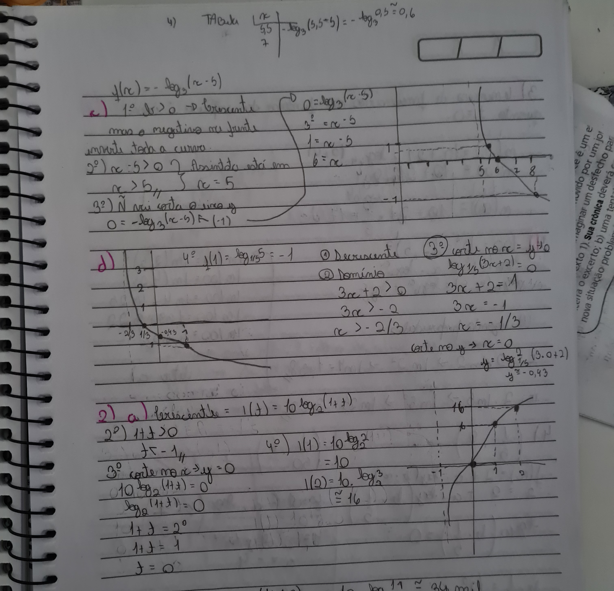

Minhas principais dificuldades nesse terceiro trimestre foram as funções logarítmicas e as propriedades operatória dos logaritmos.
Em Funções Logarítmicas eu tive grande dificuldade, principalmente com os gráficos, para mim foi o conteúdo mais
dificil trabalhado em todo ano. Confesso que até agora tenho pequenas dúvidas mas mesmo assim consegui enender o
conteúdo. Na construção dos gráficos é resumido em etapas sendo elas:
1º: Analisar o crescimento ou decrescimento;
2º: Determinar o conjunto domínio;
3º:Encontrar as interseções com os eixos;
4º: Encontrar alguns pontos do gráfico.
Aqui a baixo vai um exemplo de atividade realizada por mim já corrigida, onde apaguei várias vezes e muito esforço até conseguir fazer sozinho:
Essa foi minhas tentativas para as atividades do dia 25/10. Claro passei elas a limpo novamente e corrigi todas.
Outra parte do conteúdo que não consegui acompanhas da melhor forma foi as propriedades
operatória dos logaritmos. Essas propriedades são resumidas em 4 e são muito importantes para as euqações
logaritmocas.
1º Propriedade é Logaritmo de um
produto:
log a
(M . N) = log a (M) + log a (N)
2º Propriedade é Logaritmo de um
quociente:
log a
(M / N) = log a (M) - log a (N)
3º Propriedade é Logaritmo de uma
potência:
log a (M³) = 3 . log a (M)
4º Propriedade é Logaritmo Mudança de Base:
log a (M) = log k (A) / log k (M)
A propriedade que mais me complicou foi a 3, achei ela muito dificil acho que foi por conta das potências.
Esse exemplo acima é um exercício realizado em aula presencial já corrigido.
Para esse conteúdo utilizei mecanismos como vídeos aula para aprender melhor, um exemplo foi: